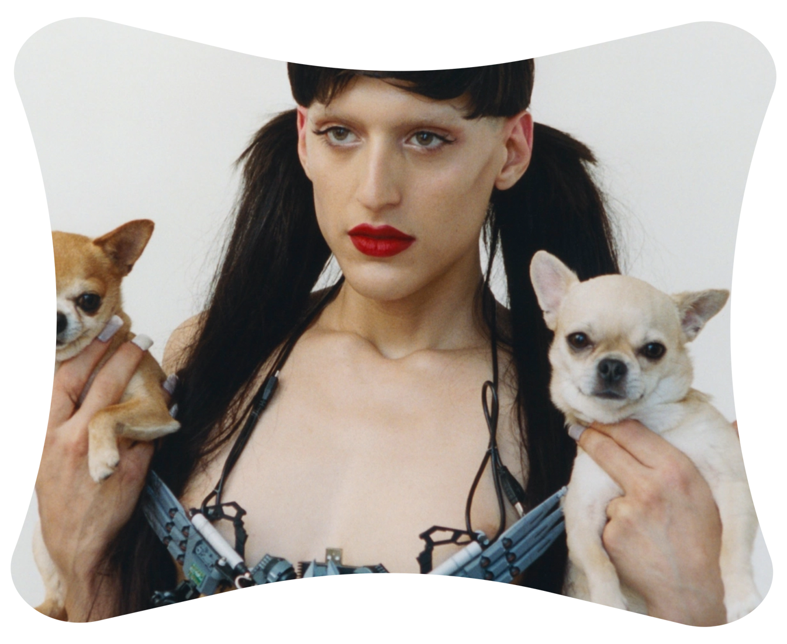
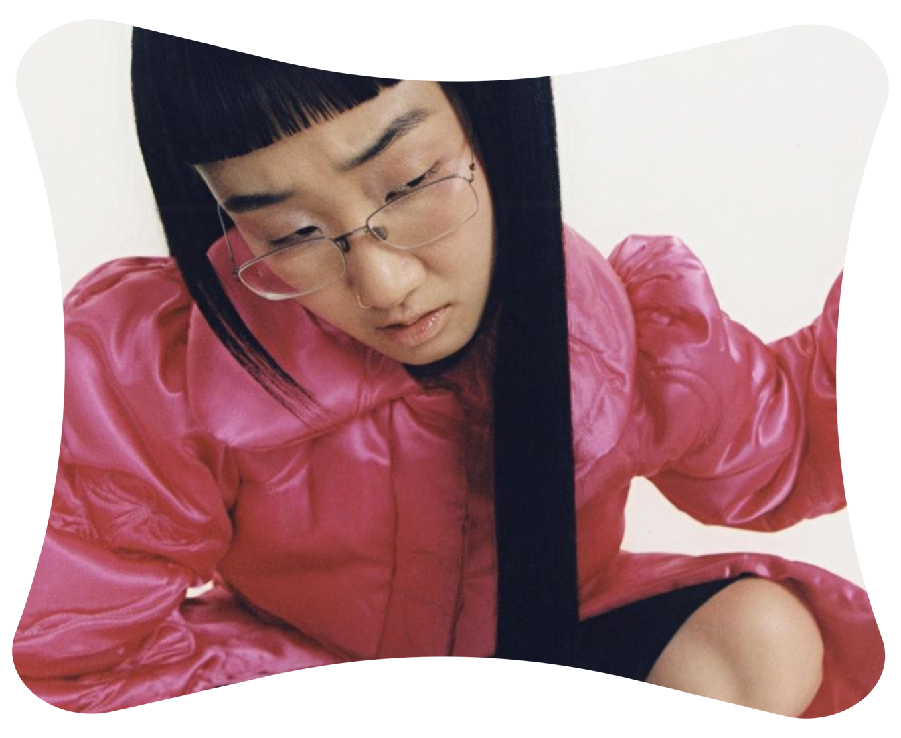
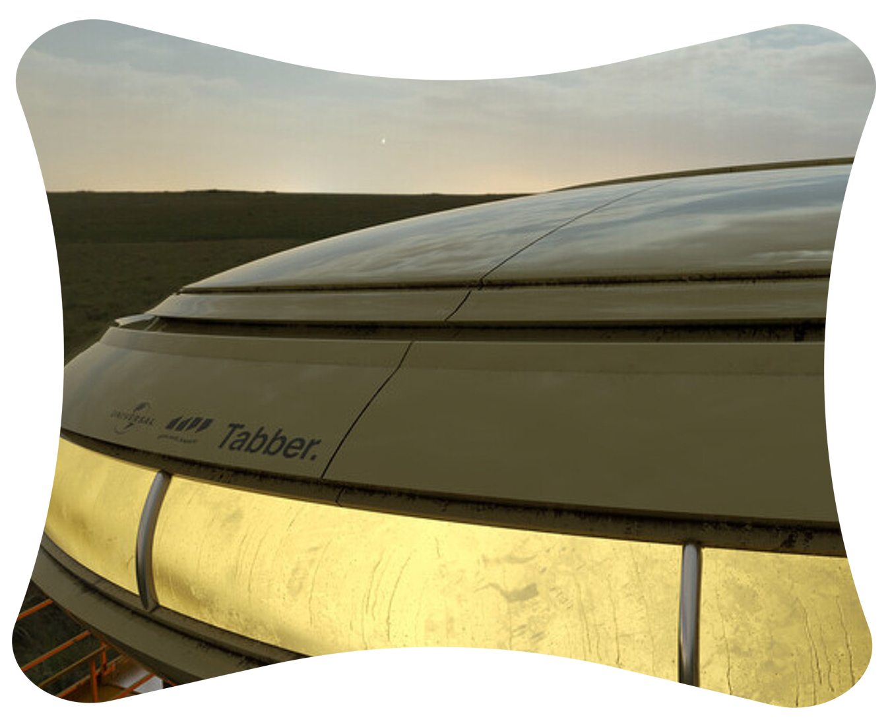

dd
Inspiration Playlist
나에게 영감을 준 음악들에 대하여
dd
1. Arca's Fantastic And Antisocial Music
나의 작업에 가장 큰 영향을 미치는 음 플레이리스트에 대하여 논하자면 Arca를 빼놓을 수 없다. Arca는 누구인가? Arca는 베네수엘라 출신의 해체 클럽 뮤직을 보여주는 아티스트이다.
내가 가장 사랑하는 Arca의 곡은 Meauetrefe로 이 노래를 들으면서 작업하는 순간은
나의 가장 행복한 순간 중에 하나이다.
Arca의 또 다른 재미있는 점 중 하나는 파괴적인 그녀의 뮤직비디오이다. 가장 반사회적이고
파워풀한 이미지로 나타내어진 그녀의 모습을 보며 그녀의 노래를 듣는 것은 아주 흥미로운데,
이러한 그녀의 시각적인 예술은 나에게 너무나 많은 영감을 준다.
dd
dd
dd
dd
dd
2. The Lovely Sounds Of Yaeji
Yaeji의 음악또한 나에게 많은 영감을 주는 음악 중 하나이다. 그녀의 음악이 정말 정말 특별한
이유는 독특하고 캐릭터 있는 일렉트로닉 사운드와 더불어 재치있는 한글가사 때문일 것이다.
내가 처음 이 Yaeji를 알게 된 건 고등학교 3학년 무렵인데, 그때의 나에게 Yaeji는 정말 다른 세계에서온 사람 같았다. 4년이 지난 지금도 나를 그렇게 느끼게 하는 걸 보면 그녀의 음악에는
정말 신비로운 힘이 있나보다.
내가 현재 작업할 때 가장 많이 듣는 노래는 Yaeji와 혁오의 콜라보래이션 음악인
Year to Year이다. 첨부한 사진은 앨범의 커버인데 예지와 혁오가 같이 그려진 밥그릇이
매우 귀엽다.
dd
dd
dd
dd
dd
3. Tabber's Creepy Low Voice
Tabber 또한 작업할 때 나에게 많은 영감을 주는 가수이다. 특히 그의 소름돋는 저음이 작업할 때 의지를 활활 불타게 하는데. 가장 좋아하는 곡은 Like A Vampire라는 곡으로 뱀파이어 컨셉과 Tabber의 섹시한 저음이 만나는 찰떡 궁합을 느낄 수 있다.
내가 현재 작업할 때 가장 많이 듣는 Tabber의 노래는 Like A Vampire이다.